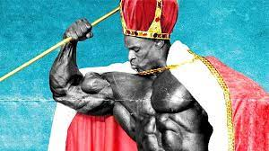

Biographie
Ronald Dean Coleman, plus connu sous le nom de Ronnie Coleman ou Ron Coleman (surnommé « Big Ron »), né le 13 mai 1964 à Monroe en Louisiane, est un culturiste américain. Il est l'un des plus titrés de la discipline avec 8 victoires consécutives au prestigieux concours de Mr. Olympia. Biographie

Palmarès
- 1990 - Mr. Texas
- 1994 - Mr. Olympia - 15e
- 1995 - Canada Pro Cup
- 1996 - Canada Pro Cup
- 1997 - Grand Prix de Russie
- 1998 - Nuit des Champions
- 1998 - Toronto Pro Invitational
- 1998 - Mr. Olympia
- 1998 - Grand Prix des Finlande
- 1998 - Grand Prix d'Allemagne
- 1999 - Mr. Olympia
- 1999 - Championnats du monde professionnels
- 1999 - Grand Prix d'Angleterre
- 2000 - Mr. Brody Langley
- 2000 - Grand Prix d'Angleterre
- 2000 - Championnats du monde professionnels
- 2000 - Mr. Olympia
- 2001 - Mr. Olympia
- 2001 - Grand Prix de Nouvelle-Zélande
- 2002 - Mr. Olympia
- 2002 - Grand Prix de Hollande
- 2003 - Mr. Olympia
- 2003 - Grand Prix de Russie
- 2004 - Mr. Olympia
- 2004 - Grand Prix d'Angleterre
- 2004 - Grand Prix d'Hollande
- 2004 - Grand Prix de Russie
- 2005 - Mr. Olympia
- 2006 - Grand Prix d'Autriche IFBB, 2e
- 2006 - Grand Prix de Hollande IFBB, 2e
- 2006 - Grand Prix de Roumanie IFBB, 2e
- 2004 - Mr. Olympia